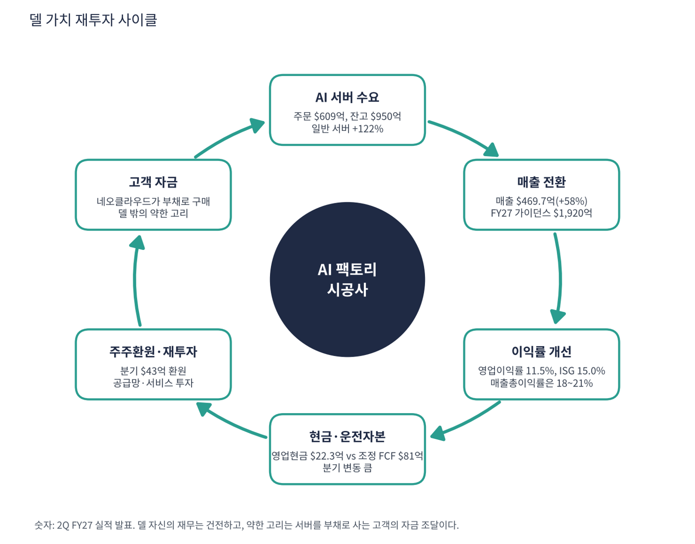

델은 PC(노트북·데스크톱)와 서버·스토리지를 파는 세계 최대 IT 하드웨어 회사 중 하나다. 2024년까지는 'PC 회사'로 평가받았지만 엔비디아 GPU를 탑재한 AI 서버를 일론 머스크의 xAI, 코어위브 같은 네오클라우드, 각국 정부·대기업에 대량 공급하면서 AI 인프라 핵심 기업이 됐다. 창업자 마이클 델이 회장 겸 CEO다. 매출은 폭발하는데 이익률은 낮은 'AI 서버 시공사'라는 점이 이 종목의 특징이다.
| 항목 | 내용 |
|---|---|
| 종목 | Dell Technologies Inc. (DELL) · NYSE · IT 하드웨어 · 1984년 설립 · 본사 텍사스주 라운드록 |
| 시가총액 | 약 $2,089억 · TTM PER 19.1배 · P/S 1.4배 (11/6 종가 $328.53) |
| 최근 분기(2Q FY27) | 매출 $469.7억(+58%), 영업이익 $53.9억(11.5%), 순이익 $41.3억, EPS $6.34(+273%, 비GAAP $7.04), 주주환원 $43억 |
| AI 서버 | 주문 $609억, 매출 $164억(+100%), 수주 잔고 $950억 (모두 사상 최대) |
| 다음 분기·연간 가이던스 | 3Q FY27 매출 $490억(+81%), FY27 매출 $1,920억(기존 $1,670억, +69%), AI 서버 $740억(+200%), 비GAAP EPS $25.50(+148%) |
| 배당 | 분기 $0.63, 배당수익률 약 0.7% |
| 다음 실적 | 3Q FY27 실적: 2026년 11월 말 발표 예정 (회계연도는 1월 말 종료) |
| 직책 | 인물 | 역할·특징 |
|---|---|---|
| 회장 겸 CEO | 마이클 델 | 창업자. PC 회사를 서버·스토리지·AI 인프라 회사로 바꾼 장기 전략의 주인 |
| 부회장 겸 COO | 제프 클라크 | 분기 실적에서 AI 서버 수주·잔고를 설명하는 대변인. "IT 환경이 비용 센터에서 성장과 경쟁 우위를 만드는 가치 동력으로 바뀌었다" |
| CFO | 데이비드 케네디 | 가이던스·조정 FCF·주주환원 설명 |
경영 스타일: '수주가 보이면 공급망과 서비스 인력을 먼저 키운다'. 회사는 연간 매출 가이던스를 한 번에 $250억 올려 $1,920억(+69%)으로 제시했다. AI 서버 잔고는 3Q FY26 $184억 → 4Q FY26 $430억 → 2Q FY27 $950억으로 5배가 됐다. 공격적인 매출 확대 속에서도 주주환원($43억, 사상 최대)을 이어가는 균형형이다. 이익률은 AI 서버가 늘수록 낮아지는 구조임에도 규모의 경제로 영업이익률은 5~9%에서 11.5%로 올렸다.
엔비디아 GPU를 탑재한 랙 단위 서버·냉각·설치 서비스를 한 번에 공급한다. AI 옆에서 데이터를 처리할 일반 서버(+122%)와 스토리지(+26%) 수요가 같이 커지는 것이 특징이다.
하이퍼스케일러는 서버를 직접 설계하지만 그 외의 수많은 기업·국가·네오클라우드는 델 같은 공급자가 필요하다. 엔비디아와 함께 '델 AI 팩토리' 브랜드로 시장을 키운다.
| 분기 (종료월) | 매출 | 매출총이익률 | 영업이익 | 영업이익률 | 순이익 | EPS | 영업현금 | AI 서버 | 특이 사항 |
|---|---|---|---|---|---|---|---|---|---|
| FY25 3Q (24.10) | $243.7억 | 22.0% | $17.2억 | 7.1% | $11.8억 | 1.64 | $15.5억 | – | |
| FY25 4Q (25.1) | $239.3억 | 23.7% | $21.6억 | 9.0% | $15.3억 | 2.15 | $5.9억 | – | |
| FY26 1Q (25.4) | $233.8억 | 21.1% | $11.7억 | 5.0% | $9.7억 | 1.37 | $28.0억 | $19억 | |
| FY26 2Q (25.7) | $297.8억 | 18.3% | $17.7억 | 5.9% | $11.6억 | 1.70 | $25.4억 | $82억 | |
| FY26 3Q (25.10) | $270.1억 | 20.7% | $21.2억 | 7.8% | $15.5억 | 2.28 | $11.7억 | – | 잔고 $184억 |
| FY26 4Q (26.1) | $333.8억 | 20.2% | $30.9억 | 9.3% | $22.6억 | 3.33* | $46.7억 | – | 잔고 $430억 |
| FY27 1Q (26.4) | $438.4억 | 17.7% | $36.6억 | 8.3% | $34.4억 | 5.24 | $40.8억 | $161억 | |
| FY27 2Q (26.7) | $469.7억 | 20.9% | $53.9억 | 11.5% | $41.3억 | 6.34 | $22.3억 | $164억 | 잔고 $950억 |
EPS는 희석 주당순이익(GAAP, SEC 제출 자료 기준)이다. *는 4분기를 '연간 EPS − 1~3분기 합'으로 계산한 근사치라 실제 발표값과 다를 수 있다.


흐름 요약: 분기 매출이 1년 전 $298억에서 $470억으로 58% 늘었다. 늘어난 $172억 중 AI 서버가 $82억, 일반 서버·네트워크가 $58억, PC가 $25억, 스토리지가 $10억이다. AI뿐 아니라 일반 서버(+122%)까지 함께 늘었다는 점이 중요하다. AI 서버는 이익률이 낮다는 통념이 깨지고 있다. 매출총이익률은 22~24%에서 18~21%로 내려왔지만 영업이익률은 5~9%에서 11.5%로 올랐고 인프라 사업부(ISG) 영업이익률은 15%(1년 전 8.8%)다. 영업현금흐름은 분기마다 크게 출렁인다. GPU 부품을 먼저 사고 고객이 나중에 돈을 내는 구조라 재고·매출채권이 늘어나는 분기에 현금이 줄어든다. 2분기 영업현금은 $22.3억이었지만 회사가 계산한 조정 FCF는 $81억이었다. 3Q·4Q FY26의 AI 서버 매출은 이번 수집에서 확인하지 못해 '–'로 표시했다.
| 사업 | 돈을 버는 방식 | 2Q FY27 | 성장 |
|---|---|---|---|
| AI 최적화 서버 (ISG) | 엔비디아 GPU를 탑재한 랙 단위 서버·냉각·설치 서비스. 네오클라우드·정부·대기업 | $164.0억 | +100% |
| 일반 서버·네트워크 (ISG) | 파워엣지 서버, 네트워크 장비 | $105.3억 | +122% |
| 스토리지 (ISG) | 파워스토어·파워스케일 등 데이터 저장 장비 | $48.5억 | +26% |
| 상업용 PC (CSG) | 기업용 노트북·데스크톱(AI PC 교체 수요) | $131.9억 | +22% |
| 소비자 PC (CSG) | 개인용 PC | $18.4억 | +7% |

매출 중심이 1년 만에 PC에서 서버로 넘어갔다. 1년 전 인프라(ISG)와 PC(CSG) 매출은 $168억 대 $125억이었는데 지금은 $318억 대 $150억이다. 영업이익 비중은 ISG 81%, CSG 19%다. ISG 영업이익은 $47.8억(+225%, 이익률 15.0%), CSG는 $11.4억(+42%, 이익률 7.6%)이다. PC도 +20%로 좋은데 AI PC 교체 수요와 윈도우 지원 종료 효과로 보인다. 메모리 가격 급등은 PC 원가 부담 요인이다. 매출 증가분의 사업부별 분해는 2분기 발표문의 전년 동기 수치로 계산했다.
클라크 부회장의 메시지는 "IT 환경이 비용 센터에서 성장과 경쟁 우위를 만드는 가치 동력으로 바뀌었고 고객은 그에 맞게 투자하고 있다"는 것이다. 델이 가려는 곳은 클라우드 밖의 모든 AI 데이터센터를 짓는 '종합 시공사'다.
| 축 | 내용 |
|---|---|
| AI 팩토리 | GPU 서버·스토리지·네트워크·냉각·설치까지 한 번에 공급. 엔비디아와 함께 '델 AI 팩토리' 브랜드 |
| 고객 다변화 | 네오클라우드 → 소버린(국가) AI → 대기업 자체 데이터센터. 3Q FY26에 회사는 파이프라인이 잔고의 몇 배라고 설명 |
| 규모의 경제 | 공급망·서비스 인력·금융(델 파이낸셜)으로 대형 주문을 빠르게 납품 |
| 주주환원 | 분기 $43억 자사주·배당. 이익 증가를 주주에게 돌려줌 |


위: 트레이딩뷰 주봉 데이터로 재구성(10·20·40주선). 아래: 트레이딩뷰 공개 차트 일봉 캡처(작도 숨김, 이동평균선·볼린저밴드만 표시).
| 이동평균 | 값 | 종가 대비 | 해석 |
|---|---|---|---|
| 5일선 | $363.80 | -9.7% | 11월 첫 주 급락 |
| 20일선 | $453.81 | -27.6% | 10월 둘째 주 급락 후 하락 |
| 50일선 | $505.02 | -34.9% | 9~10월 고점권 |
| 100일선 | $468.72 | -29.9% | |
| 200일선 | $337.46 | -2.6% | 11/6 이탈. 장기 추세의 마지막 선 |
1년 동안 $110 → $596(5.4배)으로 오른 뒤 7주 만에 45% 빠졌다. 2026년 1월 $110 연저점, 2월 말 4Q 실적 주 +21%, 3~5월 $150 → $298, 5월 말 1Q 실적 주 +43%($300 → $421), 6~8월 $360~490, 9/1 2Q 실적 후 $567~596, 10월 둘째 주 -22%, 11월 첫 주 -22%(장중 $315)로 $328.5에 마감했다. 6·12개월 수익률은 아직 플러스라 장기 추세는 살아 있지만 단기 추세는 무너졌다.
| 규칙 | 기준 | 현재 값 | 신호 |
|---|---|---|---|
| 장기 추세 필터 | 종가 vs 200일선 | $328.53 < $337.46 | 매도 |
| 중장기 교차 | 50일선 vs 200일선 | $505.02 > $337.46 | 매수 |
| 단기 교차 | 20일선 vs 50일선 | $453.81 < $505.02 | 매도 |
| 돈키언 채널 | 55일 고가 $595.51 / 저가 $315.00 | 중간값 $455.25 아래 | 매도 |
| 1개월 모멘텀 | 21거래일 수익률 | -42.8% (기준 $574.55) | 매도 |
| 3개월 모멘텀 | 63거래일 수익률 | -28.2% (기준 $457.88) | 매도 |
| 6개월 모멘텀 | 126거래일 수익률 | +26.1% (기준 $260.46) | 매수 |
| 12개월 모멘텀 | 252거래일 수익률 | +115.6% (기준 $152.41) | 매수 |
| 종합 (8개 평균) | -0.25 | 매도 우위 |
해석: 장기 신호 3개(50/200 교차, 6·12개월)가 매수로 버티고 있어 점수가 -0.25에 그친다. 그러나 6개월 기준가가 5월 급등 구간($300~420)으로 올라가는 12월 이후에는 매도로 바뀌기 쉽다. 14일 ATR $34.44 (10.5%)는 하루 ±10%가 흔하다는 뜻이다.
| 가격 | 무엇이 바뀌나 | 의미 |
|---|---|---|
| $337.5 | 200일선 회복 | 점수 0으로 상승 |
| $454 ~ 458 | 20일선, 돈키언 중간값, 3개월 기준 | 3개 신호 매수 전환, 점수 +0.75 가능 |
| $315 이탈 | 55일 저점 붕괴 | 5월 갭($300) 메우기 |
| 구분 | 가격대 | 근거 |
|---|---|---|
| 저항 2 | $420 ~ 455 | 5월 말 갭 상단, 20일선 |
| 저항 1 | $360 ~ 365 | 5일선, 11월 첫 주 시가권 |
| 지지 1 | $300 ~ 337 | 5월 말 갭 하단($300), 55일 저점($315), 200일선 |
| 지지 2 | $260 ~ 298 | 5월 중순 박스, 6개월 기준가 |
숫자는 최고, 주가는 'AI 설비투자 정점' 우려를 반영 중이다. FY27 비GAAP EPS 가이던스 $25.50 기준 PER 약 12.9배로 숫자만 보면 싸다. 시장은 지금의 주문이 고객의 부채에 기대고 있다는 점과 2027년에도 지속될지를 의심한다. $320~330에서 40%, $300~310에서 40%를 분할 매수하고 $365 회복 시 20%를 추가한다(평균 약 $322, 손절 $285 기준 손익비 1:1.2~1:3.6). 1차 $365(11월 첫 주 시가권), 2차 $455(20일선·돈키언 중간값)에서 익절한다. $300 종가 이탈이면 5월 갭 하단 붕괴로 추가 매수를 중단하고 $285 이탈이면 손절한다. 확인 신호는 3Q 매출 $490억 달성, 잔고 $950억 이상 유지, FY28 AI 서버 전망이다.
| 악재 요인 | 내용 | 강도 |
|---|---|---|
| 고객 신용 | 네오클라우드·AI 스타트업 고객이 부채로 서버를 사는 구조. 고객 자금 조달이 막히면 주문 취소·연기(10월 이후 코어위브·오라클과 동반 급락) | 높음 |
| 경쟁 | 슈퍼마이크로·HPE·레노버·대만 ODM(폭스콘·콴타)과 가격 경쟁 | 중간 |
| 원가 | GPU·메모리 원가 상승, 공급 부족 시 납품 지연. 매출총이익률 18~21%로 낮음 | 중간 |
| 엔비디아 의존 | AI 서버 매출 대부분이 엔비디아 GPU. 배정 물량이 성장 속도를 결정 | 중간 |
| 현금흐름 변동 | 대형 주문으로 운전자본 부담이 분기마다 크게 변동 | 참고 |
| 티커 | 회사 | 시가총액 | PER(TTM) | PEG | P/S | EPS 성장(YoY) |
|---|---|---|---|---|---|---|
| DELL | 델 | $209B | 19.1배 | 0.12 | 1.34배 | +153% |
| NVDA | 엔비디아 | $4,498B | 23.6배 | 0.20 | 15.63배 | +125% |
| AMD | AMD | $736B | 97.6배 | 0.68 | 14.50배 | +127% |
| AVGO | 브로드컴 | $1,402B | 37.5배 | 0.34 | 14.81배 | +100% |
| MU | 마이크론 | $781B | 9.3배 | 0.01 | 5.59배 | +879% |
| ORCL | 오라클 | $351B | 18.2배 | 0.37 | 4.70배 | +48% |
| AAPL | 애플 | $4,975B | 38.2배 | 1.84 | 10.21배 | +20% |
EPS 성장률은 트레이딩뷰 TTM 값이다. 서버 직접 경쟁사(HPE·슈퍼마이크로·레노버)는 이번 수집에서 데이터를 확보하지 못해 넣지 못했다.
비교 결론: 델 PER 19.1배는 엔비디아(23.6)·브로드컴(37.5)·AMD(97.6)보다 낮고 오라클(18.2)과 비슷하다. PEG 0.12는 이 표에서 마이크론(0.01) 다음으로 낮다. AI 인프라 중 가장 싼 축이지만 가장 낮은 마진(영업이익률 11.5%)과 고객 신용 리스크를 함께 지는 종목이다. 같은 AI 수혜주라도 엔비디아는 칩 마진 66%, 델은 시스템 조립·공급 마진이라는 점이 다르다.
델은 적자 기업이 아니다. TTM 순이익 $113.8억, EBITDA $180억이라 '런웨이'(남은 현금으로 몇 년 버티나)는 의미가 없다. 대신 AI 서버 고객의 자금 조달이 흔들릴 때 이익이 얼마나 빠지는지와 운전자본·부채 쪽을 점검했다.
| 지표 | 값 | 계산·출처 | 해석 |
|---|---|---|---|
| 영업현금흐름 (2Q FY27) | $22.3억 | 회사 발표 | 분기 출렁임이 큼(1Q $40.8억, 4Q FY26 $46.7억) |
| 조정 잉여현금흐름 (2Q FY27) | $81억 | 회사 계산 | 영업현금과 차이가 큰 점은 회사 정의 때문, 정의 상세는 10-Q 확인 필요 |
| 잉여현금흐름 (TTM) | +$85.6억 | 트레이딩뷰, 11/9 기준 | 연 순이익($113.8억)의 75% |
| 현금 / 총부채 | $117.4억 / $352.7억 | 트레이딩뷰 최근 분기 | 순부채 $235.3억. 순부채/EBITDA 1.3배 (금융 자회사 차입 포함 가능) |
| 주주환원 (2Q FY27) | $43억 | 회사 발표(사상 최대) | 분기 영업현금의 약 2배. 주가 급락 구간의 매입 지속 여부 확인 필요 |
| 가정 | 매출 영향 | 이익 영향 (가정) | 의미 |
|---|---|---|---|
| 하반기 AI 서버 매출 $415억 중 30%가 연기·취소 | -$124.5억 | 영업이익률 11.5% 적용 시 -$14.3억 → EPS 약 -$1.8 (FY27 비GAAP EPS $25.50의 약 7%) | AI 서버 마진이 낮아 매출 충격이 이익에 덜 전달된다 |
| 하반기 AI 서버 매출 50% 미달 | -$207.5억 | -$23.9억 → EPS 약 -$2.9 (약 11%) | 그래도 EPS는 $22 안팎이라 PER 약 15배 |
| 위 + 상업용 PC 교체 수요 둔화 (-10%, 가정) | 추가 -$13억/분기 | 소폭 | PC는 안전판이지만 이익 기여는 작다 |
연기·취소율, 적용 이익률, 세율 20%, 주식 수 약 6.5억 주(순이익 $41.3억 ÷ EPS $6.34로 역산)는 모두 내가 둔 스트레스 가정이다. AI 서버의 실제 영업이익률은 회사 평균(11.5%)보다 낮을 수 있다.
| 기준 | 매출 | P/S | 비고 |
|---|---|---|---|
| 트레이딩뷰 표시값(11/6 환산) | – | 1.3배 | 산출 기준 차이 |
| 최근 4분기(TTM) | $1,512억 | 1.4배 | 시총 $2,089억 ÷ $1,512억 |
| FY27 가이던스 | $1,920억 | 1.1배 | 회사 가이던스 |
| 동종 AI 반도체·서버 | – | – | 엔비디아 14.8, AMD 14.5, 브로드컴 14.8, 마이크론 5.6, 퀄컴 4.0 |
해석: P/S 1.4배는 하드웨어 조립·판매 사업의 낮은 마진을 그대로 반영한다. 엔비디아·AMD(14~15배)와 비교하면 10분의 1이지만 그 차이의 대부분은 마진 차이(델 영업이익률 11.5% vs 엔비디아 66%)다. 델에서는 P/S보다 PER·PEG가 더 정직한 지표다.
| 지표 | 값 | 판정 |
|---|---|---|
| EBITDA (트레이딩뷰, TTM) | $180억 | 흑자 |
| EBITDA 마진 | 11.9% | $180억 ÷ $1,512억 |
| TTM 영업이익률 | 9.9% | 2Q FY27 단독은 11.5% |
| 순부채 / EBITDA | 1.3배 | 순부채 $235.3억 |
| EV/EBITDA | 약 12.9배 | (시총 $2,089억 + 순부채 $235.3억) ÷ $180억 |
EBITDA 마진 12%로 AI 인프라 중 가장 낮지만 영업이익률이 5~9%에서 11.5%로 올라가는 추세다. 매출총이익률이 낮아도 영업비용(판관비 등)이 매출 증가만큼 늘지 않아 이익률이 개선되고 있다.
| 방식 | PER | EPS 성장률 | PEG | 판정 |
|---|---|---|---|---|
| 트레이딩뷰 (TTM, 11/6 환산) | 19.1배 | +153.3% | 0.12 | 적극 매수 |
| 선행 (FY27 비GAAP EPS $25.50, 가이던스) | 12.9배 ($328.53 ÷ $25.50) | +148% (가이던스) | 약 0.09 | 적극 매수 |
| 선행 (FY27 GAAP EPS $24.37) | 13.5배 | – | – | FY27 PER 참고 |
| 보수적 (FY28 EPS +20% 가정) | 12.9배 | +20% | 0.65 | 투자 적격 |
| 스트레스 (FY28 EPS +10% 가정) | 12.9배 | +10% | 1.29 | 기준 초과 |
판정: PEG 0.12 → '적극 매수' 기준(0.5 이하) 충족, 선행 기준으로도 0.09. 이번 대상 중 가장 낮은 축이다. 다만 이 낮은 PEG는 FY27 이익이 2.5배가 되는 구간의 값이라 성장이 FY28에 +20%로 꺾여도 0.65로 기준 안, +10%에서는 1.29로 기준을 넘는다. AI 서버 이익 성장이 한 해 더 이어지는지가 PEG를 정한다. FY28 성장률은 내 가정이며 회사가 제시한 수치가 아니다.

델 사이클의 엔진은 고객의 AI 투자 의지가 만드는 서버 주문과 잔고다. 주문이 매출이 되고 규모가 커지면 이익률이 올라가며, 이익과 현금이 주주환원과 공급망 투자로 돌아간다. 이 고리의 가장 바깥쪽에 고객의 자금 조달이 있다.
| 고리 | 현재 숫자 | 고리 강도 | 약해지는 신호 |
|---|---|---|---|
| ① AI 서버 수요 | 주문 $609억, 잔고 $950억(5개 분기 만에 5배), 일반 서버 +122% | 강함 | 주문 감소, 잔고 증가 둔화 |
| ② 매출 전환 | 매출 $469.7억(+58%), FY27 가이던스 $1,920억(+69%) | 강함 | 3Q 매출 $490억 미달 |
| ③ 이익률 개선 | 영업이익률 11.5%, ISG 15.0%. 매출총이익률은 18~21%로 낮음 | 개선 | GPU·메모리 원가 상승으로 매출총이익률 추가 하락 |
| ④ 현금·운전자본 | 영업현금 $22.3억 vs 조정 FCF $81억, 분기 변동 큼 | 변동 | 재고·매출채권 급증으로 영업현금 마이너스 |
| ⑤ 주주환원·재투자 | 분기 $43억 환원, 공급망·서비스 인력 투자 | 여유 | 환원이 영업현금을 넘어 차입 의존 |
| ⑥ 고객 자금 | 네오클라우드·AI 스타트업이 부채로 서버를 구매하는 구조 | 주의 | 코어위브·오라클 등 고객 신용 악화(10월 이후 동반 급락) |
이 사이클의 구조: 마이크로소프트·알파벳은 번 돈으로 짓지만 델은 고객이 짓는 돈을 서버로 받아 가는 위치다. 그래서 델 자신의 대차대조표는 건전한데(순부채/EBITDA 1.3배) 사이클의 약한 고리는 델 밖(⑥)에 있다. 강한 고리는 ①·②·③이고 약한 고리는 ⑥과 ④다.